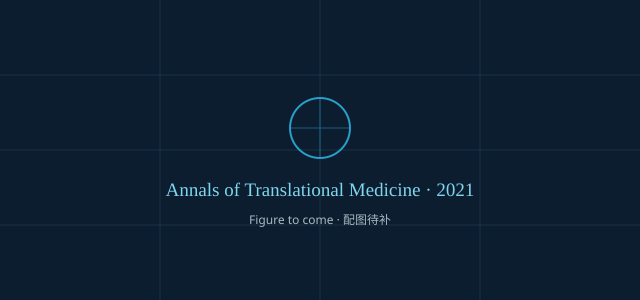
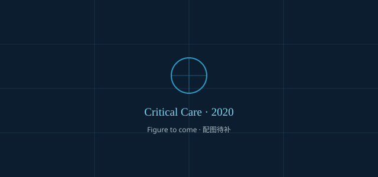

综述
主要板块之外的 AI 应用：核医学、重症、儿童耳鼻喉、疫情影像，以及开源虚拟内镜。
- 全身骨扫描端到端病灶检测
- 急性肾损伤风险分层
- 开源 CT 虚拟内镜
05 · 代表工作
代表工作
每张卡片：上方配图，下方要点。
01

An end-to-end multi-task system of automatic lesion detection and anatomical localization in whole-body bone scintigraphy by deep learning
Bioinformatics · 2023
- 全身骨扫描的端到端病灶检测与解剖定位。
- 面向核医学的多任务深度学习。
02

Development and validation of a risk stratification model for predicting the mortality of acute kidney injury in critical care patients
Annals of Translational Medicine · 2021
- 重症患者急性肾损伤死亡率的风险分层模型。
- 基于临床数据的开发与验证。

04

COVID-19 targets the right lung.
Critical Care · 2020
- 定量影像分析揭示新冠右侧肺部优先受累。
- 疫情期间基于影像的客观发现。
05

Open-source algorithm and software for computed tomography-based virtual pancreatoscopy and other applications
Visual Computing for Industry, Biomedicine, and Art · 2022
- 开源 CT 虚拟内镜（胰管镜）。
- 可推广的虚拟腔内视图框架。